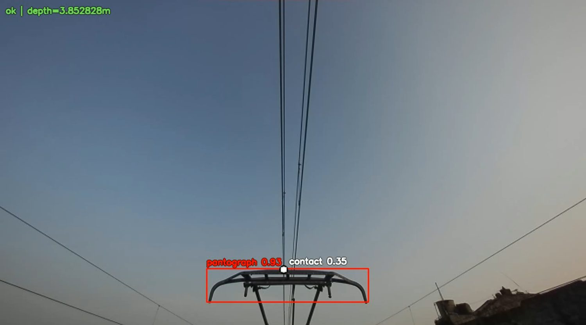

Flagship · Computer vision
Railway Vision
Detecting the pantograph, masts, arms and contact points on overhead lines from cabin-camera video, so heights can be measured from a detection. I labelled and reviewed all 23,551 frames across five routes, and trained two detectors on them.
0labelled boxes
0detectors: YOLO26x, RF-DETR
0CVAT review tasks